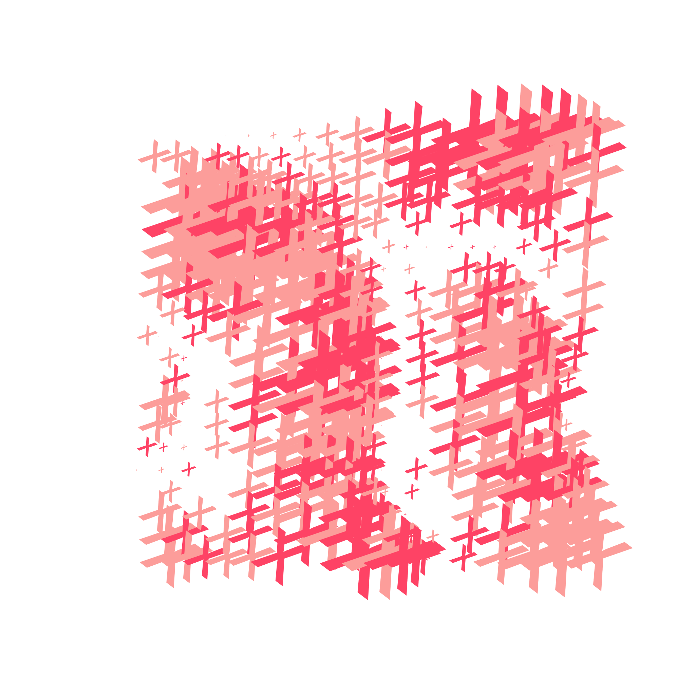

#grid
Well, the way they make shows is, they make one show. That show's called a pilot. Then they show that show to the people who make shows
=> scroll right to see more

#bubbles
Well, the way they make shows is, they make one show. That show's called a pilot. Then they show that show to the people who make shows
=> scroll right to see more
#typography
well, the way they make shows is, they make one show. That show's called a pilot. Then they show that show to the people who make shows
=> scroll right to see more
-

- 
-